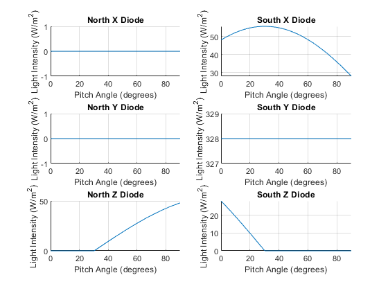

Contents
ECE 580 Project, Mathematical Model for Cubesat Attitude Sensors
-------------------------------------------------------------------------
Authors: Sergio Ribeiro Date: 07-MAY-2022 Class: ECE 580 Small Satellite Design
-------------------------------------------------------------------------
The purpose of this project is to provide a mathematical model for a cubesat satellite attitude sensor system. The sensor system is a photodiode on each face of the cubesat. There are six sensors in all. The purpose of this program is to model the response of the photodiodes to the sunlight hitting the cubesat in different orientations. For simplicity we will consider a cube of size 2U x 2U x 2U. We are not using a unit cube because we would like our vectors for describing the cube orientation to be unit vectors.
-------------------------------------------------------------------------
clearvars
clc
clf
format long
Calculate Flux Based on Spacecraft Orientation
Describe the origin as well as the vectors describing each cubesat face Naming convention will be NorthX, NorthY, NorthZ, SouthX, SouthY, SouthZ
% Define the sun flux vector here % Units are in W/m^2 Sun_Flux = [12; 82; 7]; % Describe the unit vectors corresponding to spacecraft origin = [0; 0; 0]; north_x = [1; 0; 0]; north_y = [0; 1; 0]; north_z = [0; 0; 1]; south_x = [-1; 0; 0]; south_y = [0; -1; 0]; south_z = [0; 0; -1];
Loop to Calculate Light Flux on All Diodes
Loop through various roll, pitch and yaw angles and store the values in an array to store the Diode responses to the varying roll pitch and yaw angles
angle_start = 0; angle_step = 0.1; angle_stop = 90; angle_array = angle_start:angle_step:angle_stop; Diode_NorthX = []; Diode_NorthY = []; Diode_NorthZ = []; Diode_SouthX = []; Diode_SouthY = []; Diode_SouthZ = []; roll_start = 0; pitch_start = 0; yaw_start = 0; % Print output data results to a file file_name = 'PitchAngleChange_3.csv'; file_path = [fileparts(pwd), '\Data\', file_name]; file_ID = fopen(file_path, 'w'); fprintf(file_ID, ... 'Nx, Ny, Nz, Sx, Sy, Sz, Roll, Pitch, Yaw, SunFluxX, SunFluxY, SunFluxZ\n'); for i = angle_start:angle_step:angle_stop % Rotate these by a specified roll, pitch and yaw % Use MATLABs built in DCM (direction cosine matrix) functionality rot_matrix = angle2dcm(deg2rad(roll_start), ... deg2rad(pitch_start + i), ... deg2rad(yaw_start), 'XYZ'); % Calculate the rotated vectors rot_north_x = rot_matrix * north_x; rot_north_y = rot_matrix * north_y; rot_north_z = rot_matrix * north_z; rot_south_x = rot_matrix * south_x; rot_south_y = rot_matrix * south_y; rot_south_z = rot_matrix * south_z; CubeArea = 4; CubeFlux = struct('NorthX', -CubeArea * dot(Sun_Flux, rot_north_x), ... 'NorthY', -CubeArea * dot(Sun_Flux, rot_north_y), ... 'NorthZ', -CubeArea * dot(Sun_Flux, rot_north_z), ... 'SouthX', -CubeArea * dot(Sun_Flux, rot_south_x), ... 'SouthY', -CubeArea * dot(Sun_Flux, rot_south_y), ... 'SouthZ', -CubeArea * dot(Sun_Flux, rot_south_z)); % Zero out diode responses that have negative flux % These are calculated by multiplying the response by the boolean % expression for what's true when the response is larger than 0 CubeFlux.NorthX = (CubeFlux.NorthX) * (CubeFlux.NorthX >= 0); CubeFlux.NorthY = (CubeFlux.NorthY) * (CubeFlux.NorthY >= 0); CubeFlux.NorthZ = (CubeFlux.NorthZ) * (CubeFlux.NorthZ >= 0); CubeFlux.SouthX = (CubeFlux.SouthX) * (CubeFlux.SouthX >= 0); CubeFlux.SouthY = (CubeFlux.SouthY) * (CubeFlux.SouthY >= 0); CubeFlux.SouthZ = (CubeFlux.SouthZ) * (CubeFlux.SouthZ >= 0); % Put the diode response curves in an array to be plotted later Diode_NorthX = [Diode_NorthX, CubeFlux.NorthX]; Diode_NorthY = [Diode_NorthY, CubeFlux.NorthY]; Diode_NorthZ = [Diode_NorthZ, CubeFlux.NorthZ]; Diode_SouthX = [Diode_SouthX, CubeFlux.SouthX]; Diode_SouthY = [Diode_SouthY, CubeFlux.SouthY]; Diode_SouthZ = [Diode_SouthZ, CubeFlux.SouthZ]; fprintf(file_ID, '%5.8f, %5.8f, %5.8f, %5.8f, %5.8f, %5.8f, ', ... CubeFlux.NorthX, CubeFlux.NorthY, CubeFlux.NorthZ, ... CubeFlux.SouthX, CubeFlux.SouthY, CubeFlux.SouthZ); fprintf(file_ID, '%5.8f, %5.8f, %5.8f, ', roll_start, ... pitch_start + i, yaw_start); fprintf(file_ID, '%5.8f, %5.8f, %5.8f\n', ... Sun_Flux(1), Sun_Flux(2), Sun_Flux(3)); end fclose(file_ID);
Diode Response Curves Plot
This section will plot the diode response curves based on one of the angles of degrees of freedom rotating.
xlabel_string = 'Pitch Angle (degrees)'; figure(1) % North X Diode Response subplot(3,2,1) hold on grid on plot(angle_array, Diode_NorthX); title('North X Diode'); xlabel(xlabel_string); ylabel('Light Intensity (W/m^2)'); xlim([angle_start, angle_stop]); % North Y Diode Response subplot(3,2,3) hold on grid on plot(angle_array, Diode_NorthY); title('North Y Diode'); xlabel(xlabel_string); ylabel('Light Intensity (W/m^2)'); xlim([angle_start, angle_stop]); % North Z Diode Response subplot(3,2,5) hold on grid on plot(angle_array, Diode_NorthZ); title('North Z Diode'); xlabel(xlabel_string); ylabel('Light Intensity (W/m^2)'); xlim([angle_start, angle_stop]); % South X Diode Response subplot(3,2,2) hold on grid on plot(angle_array, Diode_SouthX); title('South X Diode'); xlabel(xlabel_string); ylabel('Light Intensity (W/m^2)'); xlim([angle_start, angle_stop]); % South Y Diode Response subplot(3,2,4) hold on grid on plot(angle_array, Diode_SouthY); title('South Y Diode'); xlabel(xlabel_string); ylabel('Light Intensity (W/m^2)'); xlim([angle_start, angle_stop]); % South Z Diode Response subplot(3,2,6) hold on grid on plot(angle_array, Diode_SouthZ); title('South Z Diode'); xlabel(xlabel_string); ylabel('Light Intensity (W/m^2)'); xlim([angle_start, angle_stop]);